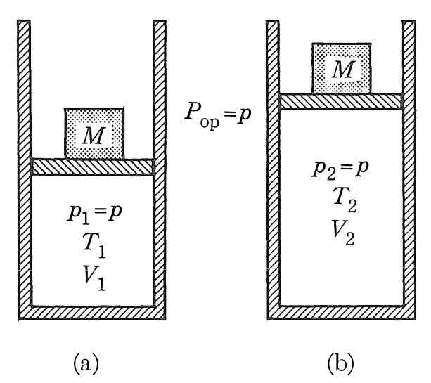

Una nueva propiedad de estado
Si consideramos un gas ideal con expansión a presión constante, tendremos

\[ \int_1^2 dU = \int_1^2 \delta Q_p + \int_1^2 p dV\quad\mbox{con}\quad p = p_1 = p_2 = \mbox{constante}\]
de donde obtenemos
\[ (U_2 + p_2V_2) - (U_1 + p_1 V_1) = Q_p\]
expresión que relaciona el calor involucrado en un proceso a presión constante con las propiedades de estado \(U, p, V\), de aquí que se proponga una nueva variable de estado, la entalpía, con la siguiente definición:
\[ H \equiv U + pV\]
Todas las fórmulas y definiciones presentadas pueden parecer un mero ejercicio matemático, sin embargo, son casos particulares de las expresiones generales de la Primera y Segunda Leyes de la Termodinámica. Con el poderoso concepto "entropía" (que veremos en la siguiente sección) podremos aplicar la "energía de Gibbs" como criterio de equilibrio y espontaneidad en diversos sistema. Adelantemos que:
\[ G \equiv H - TS \]